
Orange plasma dots, a travelling sparkle and a slow pinball attract loop.
Two random batches of twenty styles, plus a new CLI startup-banner reference at 41. Filter by the actual output format: copyable text / ASCII or SVG images. Candidate 41 includes a text fallback and a sampler prompt. Tick around five favourites, then copy their numbers and send them back. The home README opens with 16 and features 04, 26, 36, 38, 12 and 25.

Orange plasma dots, a travelling sparkle and a slow pinball attract loop.
R E A D M E . N F O
2 0 2 6
A world of retro headers
Built from text and vectors
By what name shall we know you? visitor
Welcome, visitor. Your adventure begins with a blank README.
*** PRESS RETURN: <enter>
README.NFO — The Hall of First Impressions
You stand beneath an arch made of glowing text. Thirteen doors
lead to 152 different styles: terminals, trackers, arcades and
stranger places. Every header is yours to copy and customise.
A small brass plaque beside the door reads: MIT.
A catalogue of styles rests on a wooden lectern.
A gallery of finished headers hangs along the north wall.
A toolkit waits in an open chest.
[ Exits: north: catalogue east: galleries west: licence ]
152H 13M 20V > look
You see twenty possible beginnings. Choose the one that feels like you.
152H 13M 20V > _
A plain-text MUD login and a room full of reusable headers. The exits are real links.

Independent phosphor streams keep falling while the repository title locks into the centre.
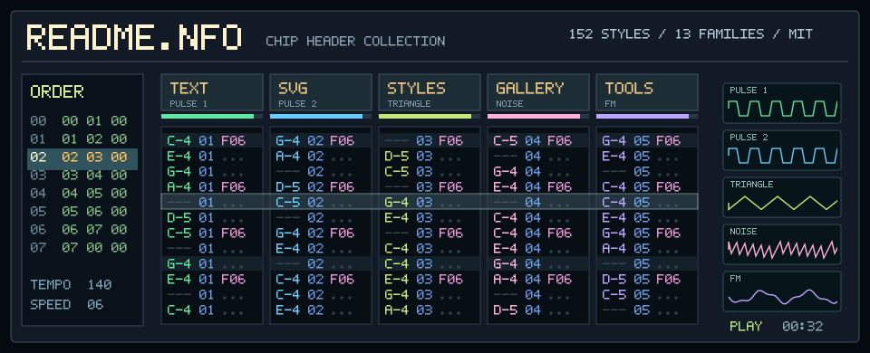
Five colour-coded chip channels for text, SVG, styles, galleries and tools, with a pattern grid and live scopes.
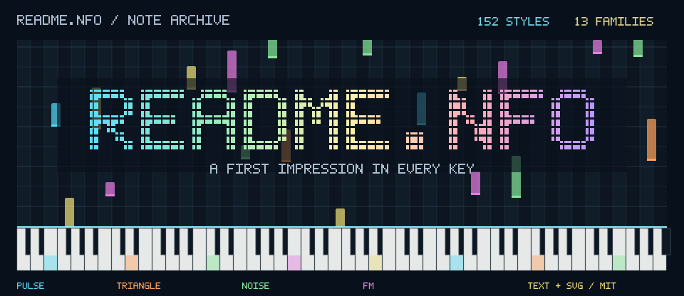
Slow rainbow notes descend onto a piano keyboard; a luminous note mosaic spells README.NFO.
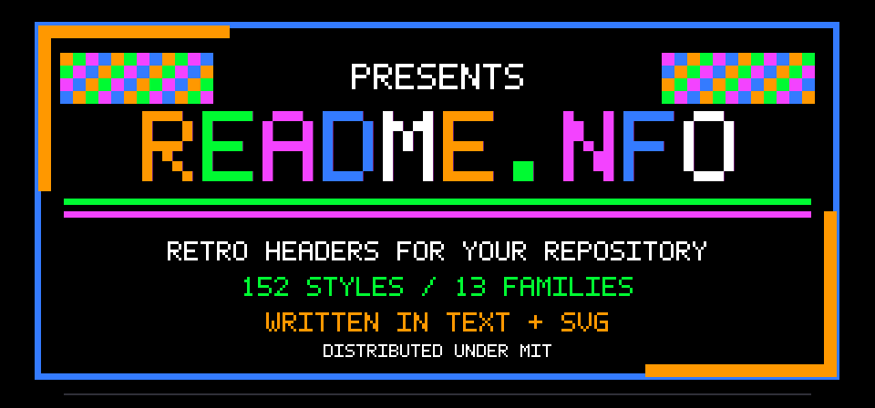
Six-colour title panels with a narrow, forty-column companion credit screen.
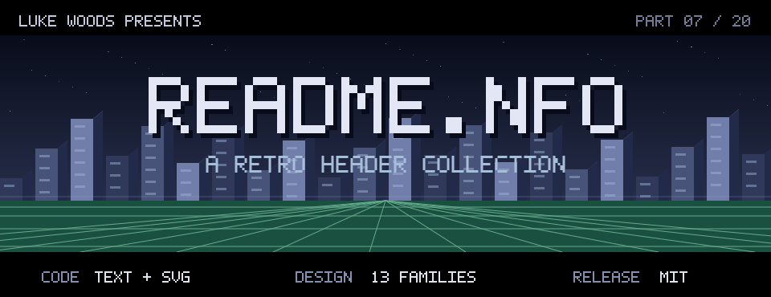
A letterboxed demo opening: held title, drifting horizon, and production credits.
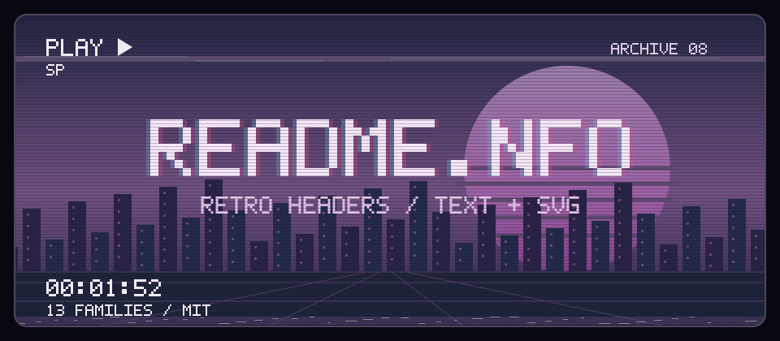
Late-night tape: purple skyline, sharp title, OSD and restrained tracking drift.
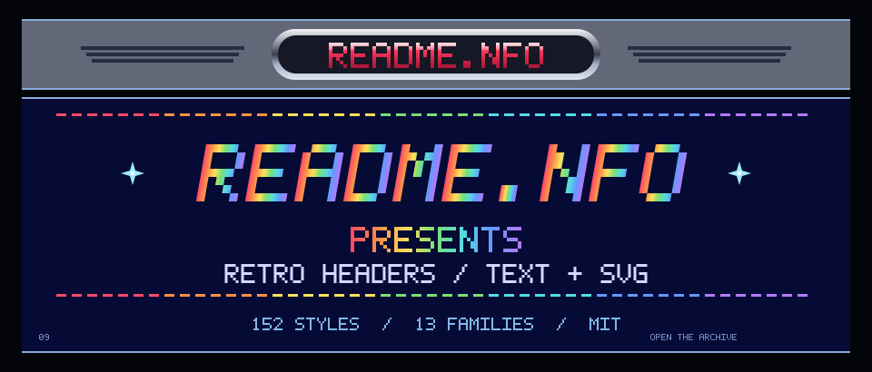
A red logo plate, deep-blue panel and gently waving rainbow copper title.
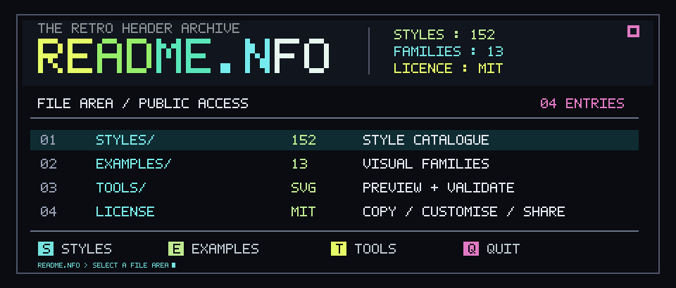
BBS data screen with a stats masthead, directory table and inverse-video hotkeys.
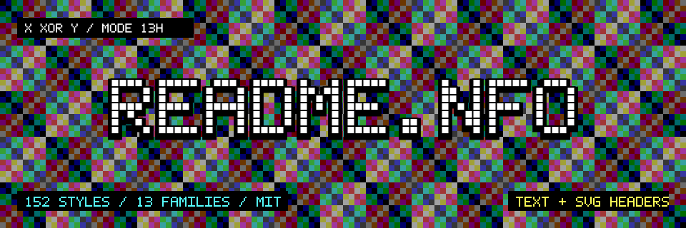
A tiny-intro XOR quilt in the sixteen VGA colours, with a crisp block title and slow pixel-grid drift.
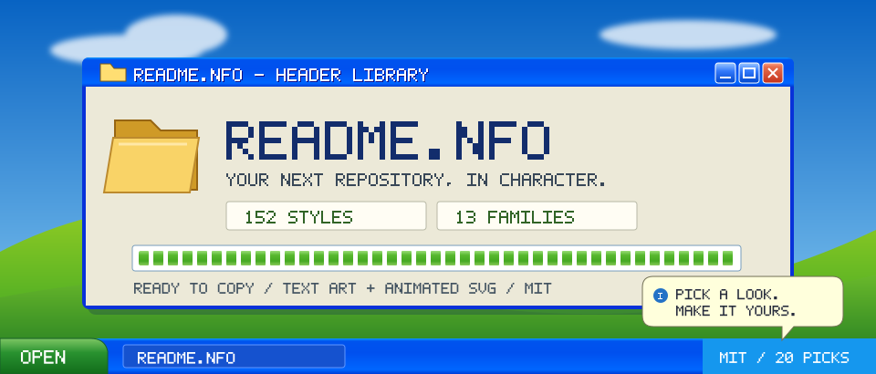
An original hill-and-sky desktop, glossy blue window chrome and a cream header-library dialog.

A one-shot scatter of scrambled cells decrypts into a quiet blue title block, then settles permanently.

Cold chrome, a faded mirror floor, purple ribbon twisters and a pink sine-wave scroller.

Bright ANSI letters paint in row by row at modem speed, then a little block robot keeps the connection alive.
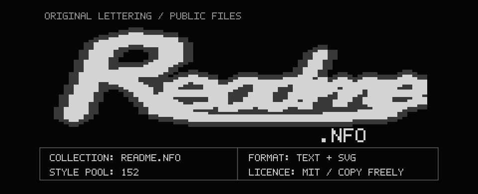
An original oversized brush R, joined half-block lettering and a two-column NFO information panel.
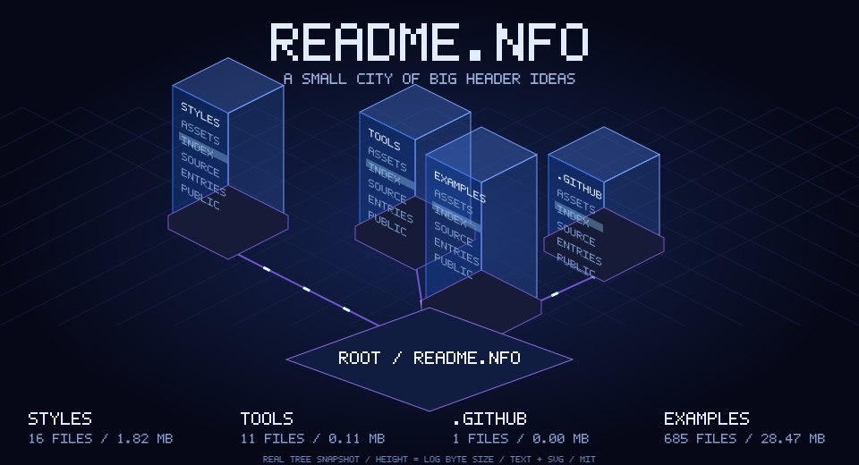
A glass-tower map of the real repository: directory sizes become height, and white data pulses connect them.

A blue tone pad, sixteen ivory keys and real dual-frequency scope traces; it silently dials 152 / 13.
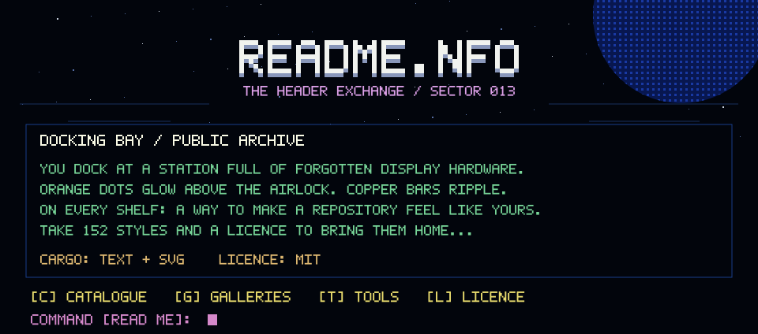
An original space-station door game: narrated arrival, a starfield, bracketed choices and a command prompt.
; +--------------------------------------------------------------------+ ; | R E A D M E . N F O PUBLIC FILES / ORIGINAL THEME | ; +--------------------------------------------------------------------+ #Title README.NFO - eight bars for a blank repository #Composer lukexyz / README.NFO #Memo Retro headers: 152 styles, 13 families, text art + SVG #Memo MIT licence. Copy the header. Change the arrangement. ; PMD-inspired MML. A = melody / B = answering voice / G = bass. ; A quiet original C-major motif; this listing is not audio playback. A t132 @1 v10 o4 l8 c e g >c< g e d r | e g >d c< g4 r4 A f a >c e< a g f r | e g b >d< c4 r4 A c d e g a g e r | f e d c e4 r4 A d f a >c< b a g r | e d c r c2 B t132 @2 v7 o4 l8 r4 c e r4 b d | r4 e g r4 d g B r4 c f r4 c f | r4 c e r4 c e B r4 e g r4 c e | r4 c f r4 c e B r4 d f r4 b d | r4 c e c2 G t132 v8 o3 l4 c g c g | e b e b | f c f c | c g c g G a e a e | f c f c | g d g d | c2 r2 ; FILE MAP ------------------------------------------------------------- ; styles/ : the score book 13 families / 152 distinct looks ; examples/ : the finished mixes copyable Markdown + SVG headers ; tools/ : the rehearsal room preview / galleries / validation ; LICENSE : the permission slip MIT ; ----------------------------------------------------------------------
A text-only PMD-inspired music-source header with an original eight-bar melody and a repository file map.

A grey IRC channel window, a bot-pasted colour logo and a brief fictional netsplit.
+------------------------------------------------------------------+
| README.NFO TYPE-IN DESK |
| Program 1: A first impression ISSUE 013 |
+------------------------------------------------------------------+
Enter the listing below. Replace brace tokens with the matching
screen keys on your chosen BASIC system. Keep your favourite style.
10 PRINT "{CLR}{RVS}README.NFO{OFF}" :REM 208
20 REM RETRO HEADERS FOR YOUR REPOSITORY :REM 228
30 REM TYPE IT IN. MAKE IT YOURS. :REM 86
40 READ STYLES,FAMILIES :REM 26
50 PRINT STYLES;" STYLES TO EXPLORE" :REM 155
60 PRINT FAMILIES;" FAMILIES OF FIRST LOOKS" :REM 107
70 PRINT "TEXT ART + SVG / MIT LICENCE" :REM 139
80 PRINT "1 CATALOGUE 2 GALLERIES 3 TOOLS" :REM 173
90 INPUT "CHOOSE A SECTION";N :REM 93
100 IF N=1 THEN GOSUB 1000 :REM 236
110 IF N=2 THEN GOSUB 1100 :REM 239
120 IF N=3 THEN GOSUB 1200 :REM 242
130 GOTO 80 :REM 117
200 DATA 152,13,2026,10,5,0 :REM 84
1000 PRINT "STYLES/INDEX.MD":RETURN :REM 54
1100 PRINT "EXAMPLES/README.MD":RETURN :REM 232
1200 PRINT "NPM RUN PREVIEW":RETURN :REM 48
CHECK COLUMN: sum the ASCII bytes BEFORE the :REM, modulo 256.
Exclude the padding spaces. Checksums describe this printed listing;
brace tokens are counted literally, before keyboard substitution.
COPY / CUSTOMISE / SHARE
README.NFO - OCTOBER 2026
A magazine BASIC type-in page with original code, brace tokens and genuinely computed ASCII-sum checksums.

A four-shade green 160×144 LCD: the logo drops, pauses, then opens an original tile-built book title screen.
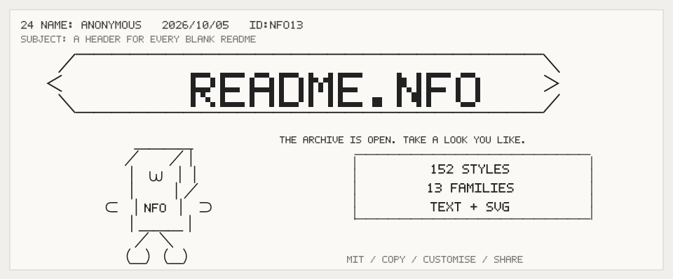
A static anonymous forum post with a proportional punctuation balloon and an original folded-page AA archivist.
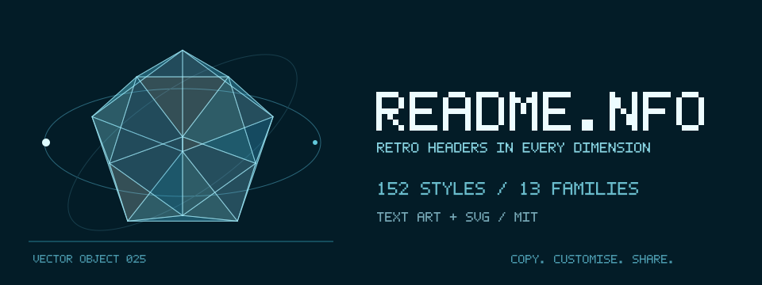
A slow, genuinely projected 3D glenz icosahedron with translucent faces, wire edges and orbiting dots.
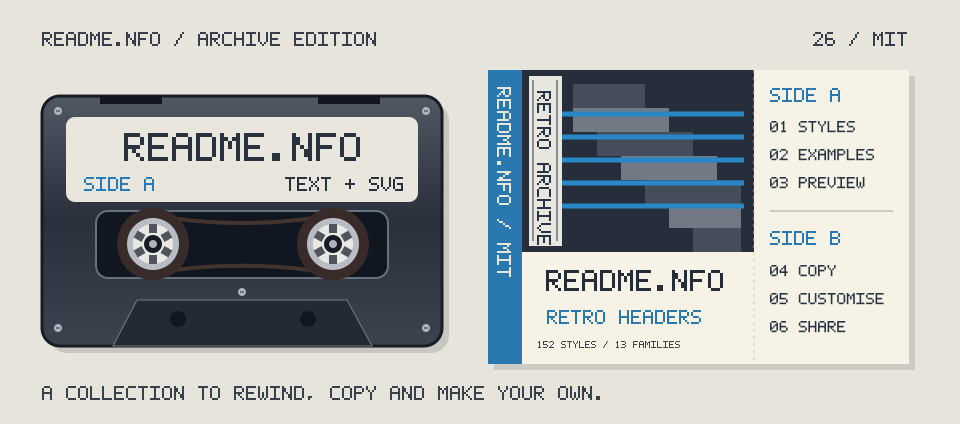
A cassette edition with turning hubs, an obi strip and a six-section J-card track list.
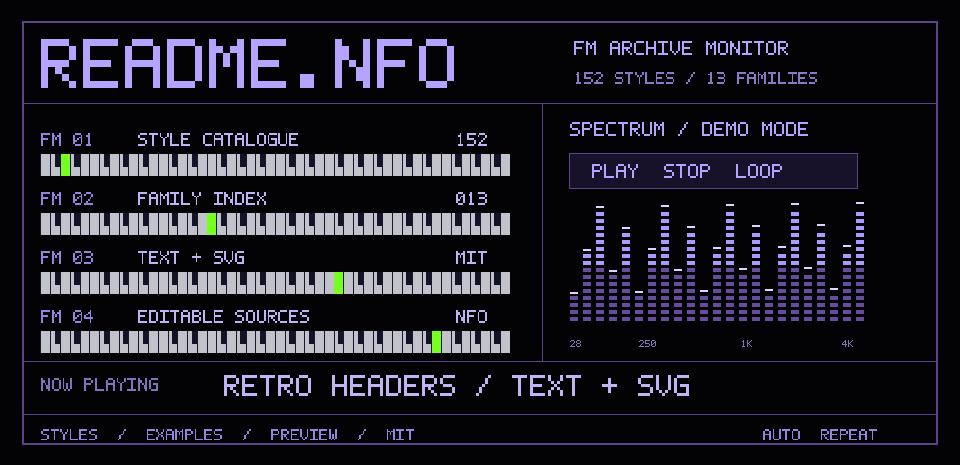
Four keyboard channels, lime key lights and a stepped lavender spectrum for the retro archive.
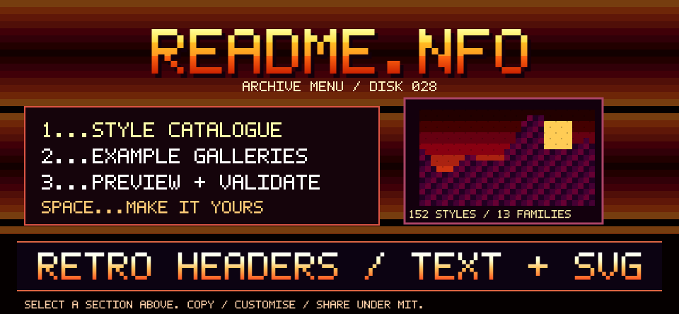
A menu disk with red scanline rasters, warm logo, numbered keys and a pixel sunset.
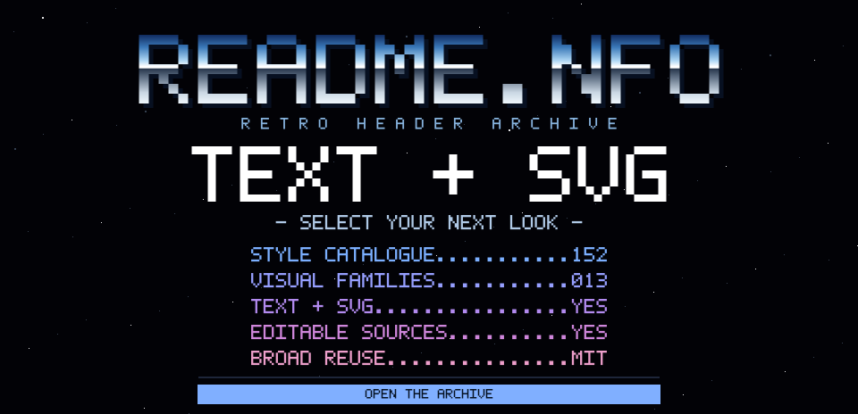
Chrome title, sparse starfield, giant white scroller and a blue-to-pink dotted selector.
⣵⡿⣫⣾⠀⠀⡿⣫⣾⢟⣵⠀⠀⣾⢟⣵⠀⠀⣾⢟⣵⡿⠀⠀⢟⠀⠀⠀⣾⠀⣵⡿⣫⣾⢟⠀⠀⠀⠀⠀⠀⠀⣫⠀⠀⠀⡿⠀⣾⢟⣵⡿⣫⠀⠀⣵⡿⣫⠀ ⣫⠀⠀⠀⡿⠀⣾⠀⠀⠀⠀⠀⢟⠀⠀⠀⣾⠀⣵⠀⠀⠀⢟⠀⡿⣫⠀⢟⣵⠀⣫⠀⠀⠀⠀⠀⠀⠀⠀⠀⠀⠀⢟⣵⠀⠀⣾⠀⣵⠀⠀⠀⠀⠀⡿⠀⠀⠀⣵ ⢟⠀⠀⠀⣾⠀⣵⠀⠀⠀⠀⠀⡿⠀⠀⠀⣵⠀⣫⠀⠀⠀⡿⠀⣾⠀⣵⠀⣫⠀⢟⠀⠀⠀⠀⠀⠀⠀⠀⠀⠀⠀⡿⣫⠀⠀⣵⠀⣫⠀⠀⠀⠀⠀⣾⠀⠀⠀⣫ ⡿⣫⣾⢟⠀⠀⣫⣾⢟⣵⠀⠀⣾⢟⣵⡿⣫⠀⢟⠀⠀⠀⣾⠀⣵⠀⣫⠀⢟⠀⡿⣫⣾⢟⠀⠀⠀⠀⠀⠀⠀⠀⣾⠀⣵⠀⣫⠀⢟⣵⡿⣫⠀⠀⣵⠀⠀⠀⢟ ⣾⠀⣵⠀⠀⠀⢟⠀⠀⠀⠀⠀⣵⠀⠀⠀⢟⠀⡿⠀⠀⠀⣵⠀⣫⠀⠀⠀⡿⠀⣾⠀⠀⠀⠀⠀⠀⠀⠀⠀⠀⠀⣵⠀⠀⣾⢟⠀⡿⠀⠀⠀⠀⠀⣫⠀⠀⠀⡿ ⣵⠀⠀⣾⠀⠀⡿⠀⠀⠀⠀⠀⣫⠀⠀⠀⡿⠀⣾⠀⠀⠀⣫⠀⢟⠀⠀⠀⣾⠀⣵⠀⠀⠀⠀⠀⠀⣫⣾⠀⠀⠀⣫⠀⠀⣵⡿⠀⣾⠀⠀⠀⠀⠀⢟⠀⠀⠀⣾ ⣫⠀⠀⠀⡿⠀⣾⢟⣵⡿⣫⠀⢟⠀⠀⠀⣾⠀⣵⡿⣫⣾⠀⠀⡿⠀⠀⠀⣵⠀⣫⣾⢟⣵⡿⠀⠀⢟⣵⠀⠀⠀⢟⠀⠀⠀⣾⠀⣵⠀⠀⠀⠀⠀⠀⣫⣾⢟⠀ ⠀⠀⠀⠀⠀⠀⠀⠀⠀⠀⠀⠀⠀⠀⠀⠀⠀⠀⠀⠀⠀⠀⠀⠀⠀⠀⠀⠀⠀⠀⠀⠀⠀⠀⠀⠀⠀⠀⠀⠀⠀⠀⠀⠀⠀⠀⠀⠀⠀⠀⠀⠀⠀⠀⠀⠀⠀⠀⠀ ⠀⠀⠀⠀⠀⠀⠀⠀⠀⠀⠀⠀⠀⠀⠀⠀⠀⠀⠀⢀⣀⣀⢤⠤⡤⢤⠤⡤⣀⣀⡀⠀⠀⠀⠀⠀⠀⠀⠀⠀⠀⠀⠀⠀⠀⠀⠀⠀⠀⠀⠀⠀⢀⣀⣀⢤⠤⡤⢤ ⠖⢤⠤⣀⣀⡀⠀⠀⠀⠀⠀⢀⣀⣀⠤⡤⠲⠊⠋⠉⠀⠁⠀⠀⠀⠀⠀⠀⠈⠀⠉⠙⠑⠖⢤⠤⣀⣀⡀⠀⠀⠀⠀⠀⢀⣀⣀⠤⡤⠲⠊⠋⠉⠀⠁⠀⠀⠀⠀ ⠀⠀⠀⠁⠈⠈⠋⠙⠉⠋⠙⠁⠁⠈⠀⠀⠀⠀⠀⠀⠀⠀⠀⠀⠀⠀⠀⠀⠀⠀⠀⠀⠀⠀⠀⠀⠁⠈⠈⠋⠙⠉⠋⠙⠁⠁⠈⠀⠀⠀⠀⠀⠀⠀⠀⠀⠀⠀⠀
A stippled Braille-dot wordmark and decorative sine trace with ordinary text labels.
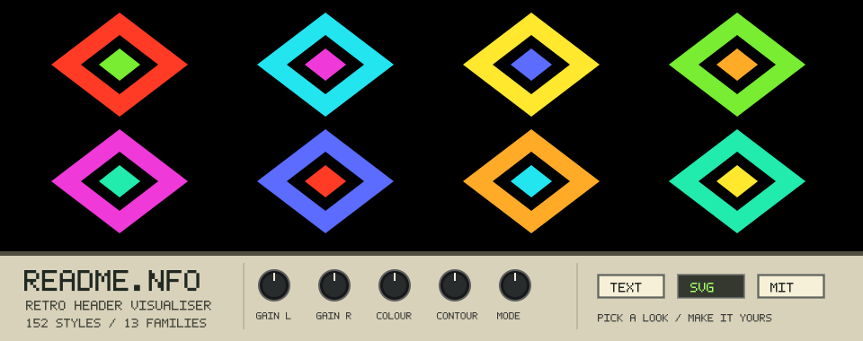
Eight two-part TV diamonds pulse independently above an original cream visualiser faceplate.
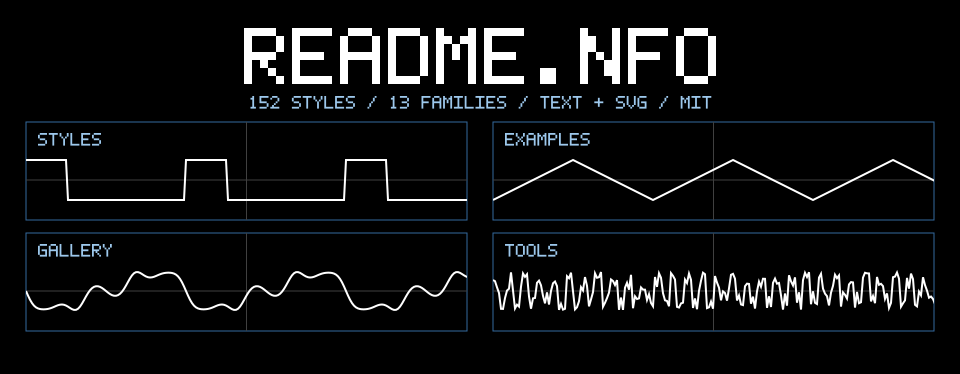
Four clean white scopes give the styles, examples, gallery and tools their own waveform personality.

A blue sphere chain follows a figure-eight beside a rotating dot lattice, framed by rainbow hairlines.
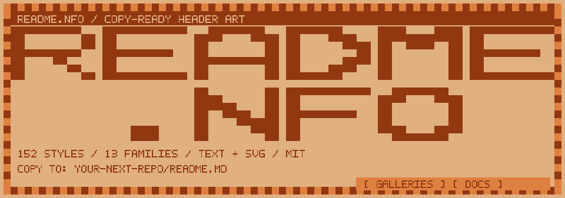
A flat tan-and-orange installer poster with giant packed character cells and a matching text version.
R E A D M E . N F O
HEADER JAM / RESULTS.TXT
CATALOGUE COUNTS - NO BALLOTS WERE CAST
----------------------------------------------------------------------------
STYLE COVERAGE COMPO
- ---- -------------------------------------------------------------- ---- -
Rank Cards Family
01. 18 Hacker, phreak and zine culture
02. 17 Vaporwave and internet-era aesthetics
03. 14 C64, Amiga and Atari ST
04. 14 PC cracktros and keygen intros
05. 13 Retro machine, console and arcade screens
06. 11 ANSI art, BBS and text-mode
07. 11 The demoscene proper
08. 11 NFO and ASCII art schools
09. 11 Trackers and chiptune visuals
10. 10 Screensavers, idle screens and visualisers
11. 10 How the files moved
12. 7 Japan and East Asia
13. 5 Physical media and print ephemera
----------------------------------------------------------------------------
DELIVERY COMPO
- ---- -------------------------------------------------------------- ---- -
01. 152 Researched style cards by styles/
02. 40 README.NFO header candidates by examples/readme-nfo/
03. 13 Distinct visual families by the catalogue
04. 2 Header formats: text art + SVG by the examples
----------------------------------------------------------------------------
152 distinct styles / 13 families / original recipes / MIT licence
[ STYLE CATALOGUE ] [ ALL CANDIDATES ] [ MIT LICENCE ]
----------------------------------------------------------------------------
A demoparty-style results file ranks real catalogue coverage and delivery counts; no fictional votes.

An original off-air circle test card, seven colour bars and a slow-hopping NO SIGNAL box.
+--------------------------------------------------------------------------+
| = = = R E A D M E . N F O = = = |
| PUBLIC FILES / 2026 |
+--------------------------------------------------------------------------+
| Retro headers for your next repository |
| 152 styles / 13 families / text + SVG / MIT |
+--------------------------------------------------------------------------+
M A I N I N D E X
The style catalogue..............................01
The finished galleries...........................02
Your next first impression.......................03
The licence notice...............................04
- 01 -
THE DEMO
========
A blank repository deserves a memorable first screen.
Copy a header, change its words, and let your README make
an entrance: terminal, tracker, copper, chrome, dots or paper.
FILE CREW
---------
AREA CONTENT POSITION
---------------------------------------------------------
styles/ 152 researched looks reference library
examples/ Markdown + SVG finished productions
tools/ build + preview workshop
LICENSE MIT permission slip
- 02 -
Q: May I use these headers in my own repository?
A: Yes. Keep the MIT notice with the copied material.
Q: Which one should I choose?
A: The one that feels like the project you are making.
--- CUT HERE! ---------------- CUT HERE! ---------------- CUT HERE! --------
REQUEST FOR A DIFFERENT FIRST IMPRESSION
Project name : __________________________________________
Favourite #s : __________________________________________
Desired mood : [ ] quiet [ ] loud [ ] nostalgic [ ] strange
---------------------------------------------------------------------------
A pure-text paged READ.ME with a dot-leader index, file crew, FAQ and cut-here request form.
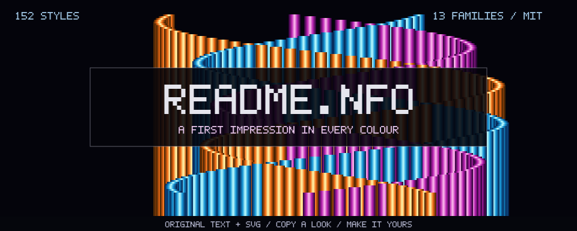
Three slowly swaying scanline ramps braid into copper ribbons behind a crisp, dark-backed title.
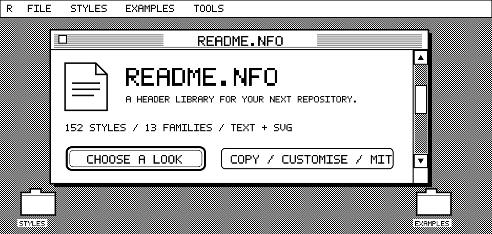
Two colours, checker dither, pinstripe chrome and an original document window: a quiet one-bit desktop.

A challenge board and stepped scoreboard built from real counts in the two saved candidate draws.
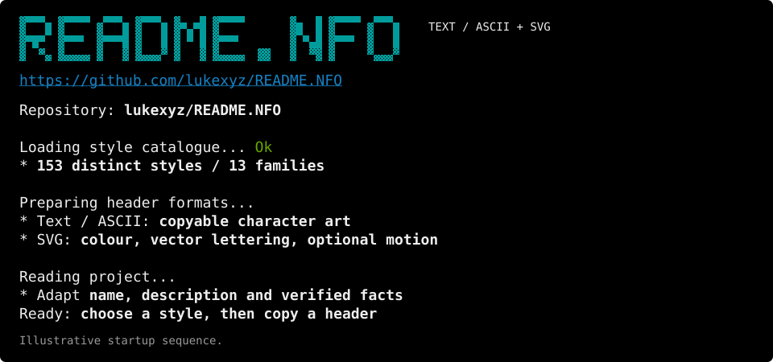
A teal block-letter CLI banner with a compact illustrative diagnostic log. SVG with a copyable text / ASCII fallback.
No headers match these filters. Choose All formats or All 41 to see more.
Two non-repeating draws saved on 5 October 2026 from the original 152 catalogue styles; 41 is an additional reference for new style hack-19. Selection stays in this browser when local storage is available. MIT licence · Other galleries · Repository README.